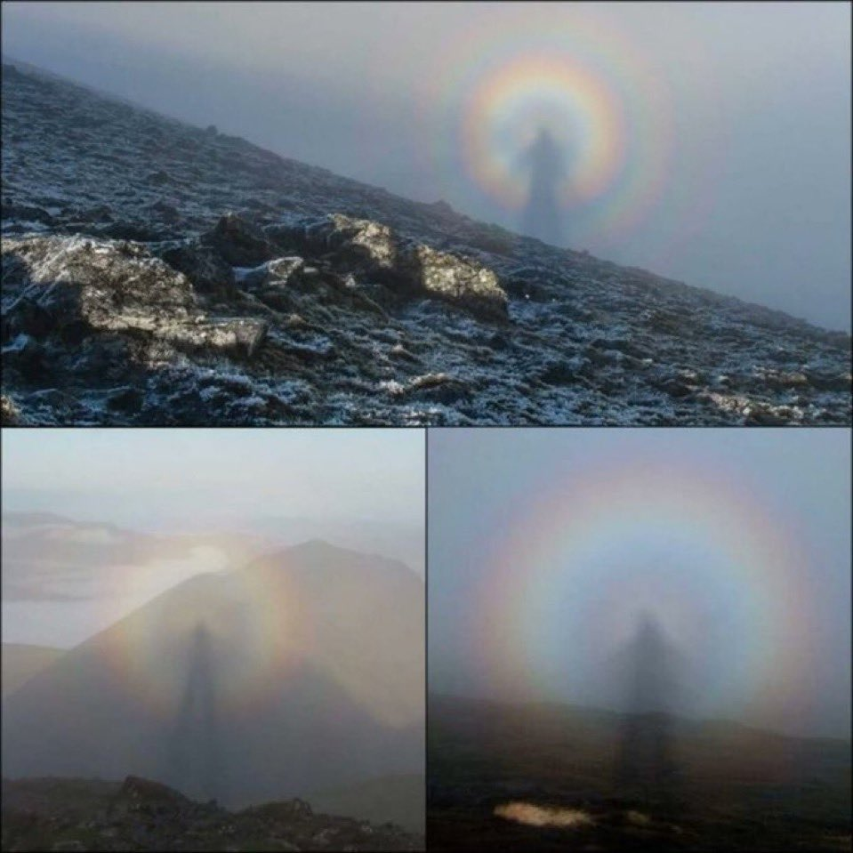

The sea in the sky
Purple dusk in Vietnam
One of the most mysterious weather phenomena on Earth: meet the sprites
Spectacular video of a meteorite
The clouds looks like a tsunami
Rainbows are actually circles - the full circle is visible from great heights
A spectacular luminous cloud
Volcano lightning
What's wrong with her hair?

A rare phenomenon called "cross waves"
 in Indonesia.jpg)
A meteorite fell near the most active volcano (Mount Merapi) in Indonesia
A river of rocks
The Qiantang River is the largest tidal river in the world, with speeds above 24 km/h
Mind-blowing sunset. This happens due to a phenomenon called Rayleigh scattering
Methane bubbles under the ice of Lake Baikal

Ice Eggs: This strange phenomenon occurs when ice is carried by wind and water
Northern lights, simply wonderful

The Giant's Causeway in Northern Ireland

Northern lights in Tuscany, Italy

The phenomenon of the "Broken spectre". It occurs when a person stands above the upper surface of a cloud - on a mountain or high ground - with the Sun behind them.

Travel photographer Sarah Bethea captured this stunning photograph in Iceland. Where the golden rays of the setting sun entered an ice cave, dyeing a section of the cave's ice an amber colour